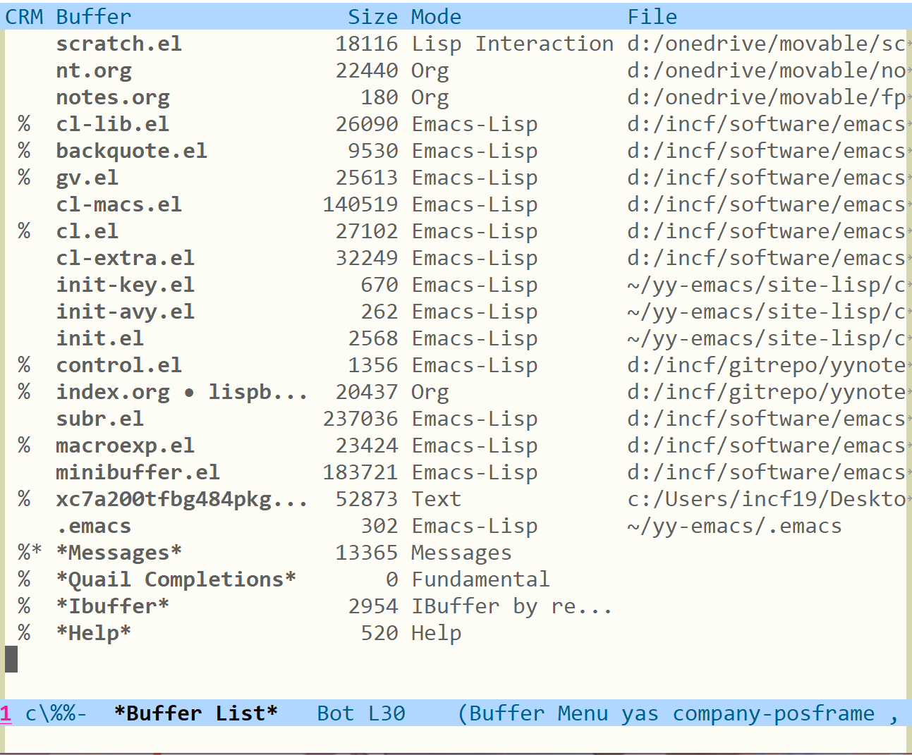
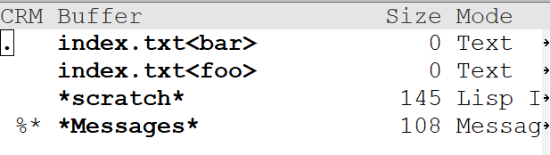
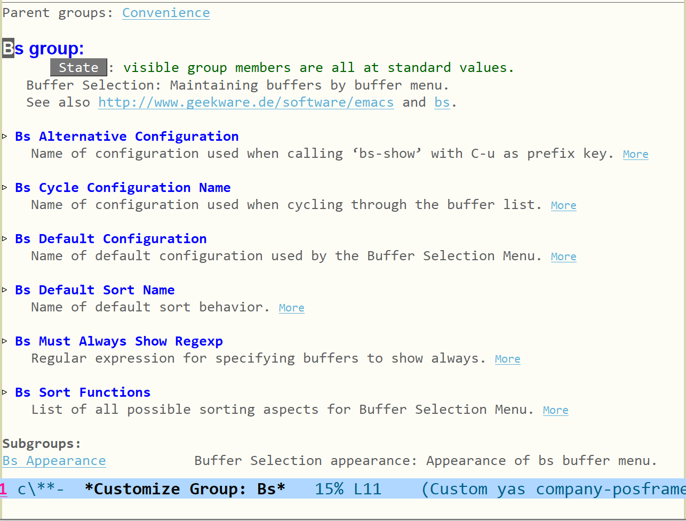
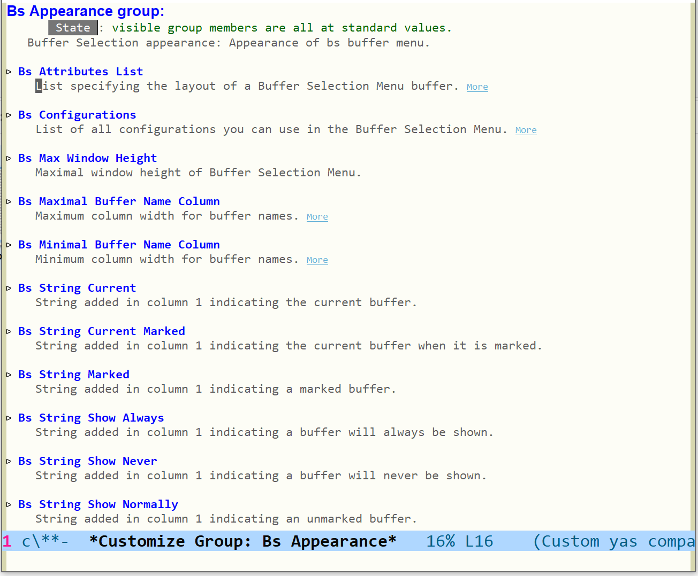
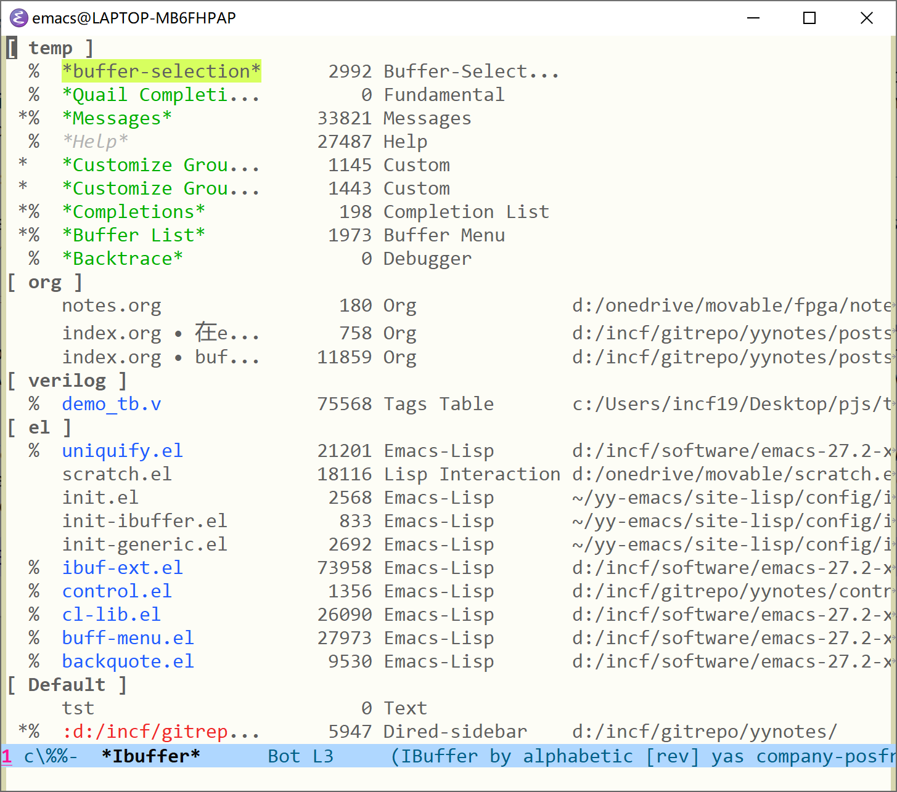
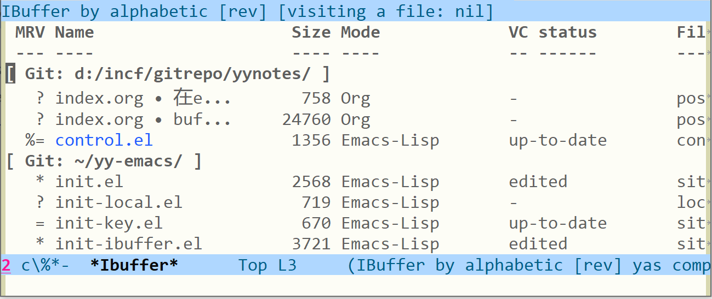

buffer 管理和 ibuffer 的介绍与使用
Table of Contents
本文并不是用来介绍 buffer 相关的 elisp 接口函数的，而是介绍如何使用 emacs 提供的功能来使用和管理 buffer。首先我会介绍 buffer-menu 的使用，随后我会介绍更强大的 ibuffer，它已经内置到 emacs 里面了。
1 buffer 概念及其基本操作
在这一节中，我首先根据 emacs manual1来介绍一下 buffer 是什么，随后介绍一些常见的 buffer 操作。
我们所有的编辑操作都是在 buffer 中完成的，当我们使用 emacs 打开一个文件时，文件中的内容就会放入 buffer 中，当我们对 buffer 执行保存操作时，buffer 中的内容就会写入文件中。buffer 也不一定要与文件绑定，我们可以创建空的 buffer，在必要的时候可以使用命令来将其保存在文件中。
在 emacs 中，同一时间只能选中一个 buffer，它被叫做当前 buffer（current buffer），它就像是键盘焦点一样，键盘只能在获得焦点的窗口中进行输入。
下面我会根据 emacs manual 的内容来介绍一些简单的 buffer 操作，我们了解一下就行了，其中一些命令我也用的不多。
1.1 选择 buffer
在没有改键的 emacs 中，下面的按键分别对应的命令是：
C-x b buffer RET，选择或创建一个 buffer，switch-to-bufferC-x 4 b buffer RET， 在另一 window 中选择或创建 buffer，switch-to-buffer-other-windowC-x 5 b buffer RET， 在另一 frame 中选择或创建 buffer，switch-to-buffer-other-frameC-x LEFTC-x RIGHT，选择 buffer list 中的上一或下一 buffer，previous-buffer，next-buffer
上面这几个命令我用的最多的还是 switch-to-buffer ，更准确地说是 ido-switch-buffer （它提供了显示 buffer 的 minibuffer ，比 emacs 原本的功能更直观一点）。buffer 多起来之后 previous-buffer 和 next-buffer 就不太实用了。至于在其他 window 或 frame 中切换 buffer，我感觉还是直接移到 window 内再选择 buffer 更方便。
1.2 列出 buffer
通过调用 C-x C-b （ list-buffer ），emacs 会为我们弹出一个叫做 *Buffer List* 的 buffer 菜单，菜单中的每一行会显示各 buffer 的名字，大小和 major mode。下面是效果图：
|  |
在这个 buffer 内，我们可以执行一些 buffer 的管理操作，我会在下一节进行简单的介绍。
1.3 关闭 buffer
emacs 中对这类操作的用词是 kill buffers ，但直译为杀死 buffer 感觉不太好。
C-x k buffer RET 即 kill-buffer 可以关闭一个指定的 buffer，在关闭该 buffer 后，另一 buffer 就会成为当前 buffer。如果被关闭的 buffer 未保存的话，emacs 会询问你是否在关闭前将 buffer 内容保存到文件中。
kill-some-buffers 会拿着 buffer-list 中的 buffer 一个个问你要不要删除，如果确定删除那就对 buffer 执行 kill-buffer 操作。
kill-matching-buffers 会要求你输入一个正则表达式，并对名字匹配正则表达式的 buffer 执行关闭操作。它会像 kill-some-buffers 一样拿匹配的 buffer 一个个问你是否关闭。
clean-buffer-list 用于关闭长时间未使用的 buffer，要控制它的行为的话，可以通过阅读该函数的文档来了解。
除了 kill-buffer （实际上我用的是 ido-kill-buffer ）外，其他的命令我基本上没有用过。
1.4 创建间接 buffer
所谓间接 buffer（indirect buffer）指的是和原 buffer 共享文本的 buffer，但除了文本一致外，它们的其他属性是分开的，也就是说间接 buffer 可以使用不同的 major mode，不同的 narrow，等等。当我们关闭原 buffer 时，它的间接 buffer 也会被关闭，但是关闭间接 buffer 不会影响到原 buffer。
make-indirect-buffer 可用来创建间接 buffer。 clone-indirect-buffer 使用当前 buffer 来创建间接 buffer。 C-x 4 c 对应的 clone-indirect-buffer-other-window 在另一 windows 打开根据当前 buffer 创建的间接 buffer。
出于懒惰的考虑，上面这些命令的效果我就不演示了，自己试一试也不麻烦。在浏览许多 emacs 中的 elisp 源代码文件时，在比较大的文件中，我们时不时可以看到使用 ^L 字符进行分页的操作。分页也许是出于功能分模块放置的考虑，不过代码的作者可能是对不同分页使用了间接 buffer，然后在不同间接 buffer 中使用 narrow-to-page 命令，这样一来就实现了“逻辑分页”的功能，将一个 elisp 文件看作多个 elisp 文件。
我之前也设想过将一个文件根据函数分为多页，每页一个函数，然后根据函数名而不是文件内容查找来进行页面跳转。但是当时没有了解到 emacs 提供的 narrow 功能，以及提供的间接 buffer 功能。有时间了我去简单实践一下，或者去找找已有的最佳实践。
1.5 其他杂项
C-x C-q可以控制当前 buffer 是否只读（read-only）rename-buffer可以更改当前 buffer 的名字rename-uniquely类似于rename-buffer，但是会在必要的时候在名字后面添加<num>来避免冲突view-buffer RET buffer RET在 buffer 中开启 view-mode
这些命令都没什么好说的，其中 C-x C-q 我用的很频繁，这是为了避免在阅读 elisp 源代码时不小心修改。也许我应该考虑使用代码实现源代码自动只读，而不是每次都按一次 C-x C-q 。
还有一件事，如果不同目录下的文件有相同的名字，emacs 会采取一些办法来区分这两个 buffer。默认的办法是在 buffer 名字前面加上后缀，比如我在 foo 和 bar 目录下都有 index.txt 文件，那 emacs 会将它们显示为 index.txt<foo> 和 index.txt<bar> 。如果目录更加复杂，那么 emacs 也会使用更长的后缀以达到区分的效果。
|  |
我们可以通过一些变量来控制 emacs 的同名 buffer 修饰规则。 uniquify-buffer-name-style 共有 5 个选项，它们对应的显示如下：
forward:bar/mumble/nameandquux/mumble/namereverse:name\mumble\barandname\mumble\quuxpost-forward:name|bar/mumbleandname|quux/mumblepost-forward-angle-brackets:name<bar/mumble>andname<quux/mumble>nil:nameandname<2>
我比较喜欢用 reverse 风格，它将多出的信息添加在 buffer 名字后面。
除了 name-style 外，还有其他的选项可用：
uniquify-after-kill-buffer-p，当关闭 buffer 时是否刷新名字，它默认为 tuniquify-ignore-buffers-re，一个正则表达式，满足该表达式的 buffer 不会被修饰uniquify-separator，修饰内容与 buffer 名字之间的间隔符，如果不指定则使用默认分隔
我使用的配置代码如下，这是从 redguardtoo 的 emacs 配置中抄过来的，他的配置可以在 github 上找到
;; Nicer naming of buffers for files with identical names (setq uniquify-buffer-name-style 'reverse) (setq uniquify-separator " • ") (setq uniquify-after-kill-buffer-p t) (setq uniquify-ignore-buffers-re "^\\*")
想要进一步了解 buffer 修饰相关内容，可以查看 uniquify.el 源代码。
2 使用 buffer-menu 来管理 buffer
所谓的 buffer-menu 就是我们上面提到的 C-x C-b 呼出的 *Buffer List* ，该 buffer 提供了一些快捷键来供我们方便地管理多个 buffer。除了说 buffer-menu 外，我们还可以使用 bs-show 来管理 buffer，相比于 buffer-menu，它提供了更多可扩展的功能。
在按下 C-x C-b 或调用 buffer-menu （或 list-buffers ）后，我们就进入了 *Buffer List* 中，按下 ? 可以查看使用帮助。下面我就帮助中的内容来介绍一下 buffer-menu 的功能。
2.1 打开光标所在 buffer
将光标移到某一行再按下 RET 就可以在 *Buffer List* 所在 windows 打开该 buffer 了，除了回车键外，我们也可以使用 o ， C-o ， v ， 1 ， 2 ，它们的功能如下：
RET，在当前 window 打开 buffero，在另一 window 打开 bufferC-o，和o类似，但是光标不移动到打开的 buffer 中V，使用 view-mode 打开 bufferv，打开所有有标记的 buffer，使用多个 window 垂直分屏显示，标记需要使用m1，在当前 frame 中打开 buffer，使用整个 frame 的空间2，在一个 window 中打开 buffer，在另一 window 中显示先前的 current buffert，以 tags-mode 打开 buffer，它应该是用来阅读 tags 文件的
老实说，我只用过 RET 切换 buffer，其他的爱用不用吧。 buffer-menu 提供了在其他 window 中打开 buffer 的功能，但是我没感觉平时用过多少。
2.2 对 buffer 中内容的搜索
M-s a C-s，在标记的 buffer 中使用增量式文本搜索M-s a C-M-s，在标记的 buffer 中使用增量式正则搜索M-s a C-o，在 buffer 中显示匹配的行，也就是多文件版的 occur
很不幸，在阅读帮助文档前我还不知道有多 buffer 搜索这回事，我一般都直接使用 git grep 进行项目内文件搜索。感兴趣的同学可以试试。使用 M-s a C-o 可以实现多文件快速修改，也许可以拿来重构用。
总之，它和一般的搜索没什么区别，除了多了 M-s a 这个前缀外。标记 buffer 同样是使用 m 。
2.3 对 buffer 的标记
m，仅标记 buffers，标记 buffer 将执行保存操作C-k，标记 buffer 将被删除，然后将光标下移k和d，和C-k一样C-d，标记 buffer 将被删除，然后将光标上移u，取消光标所在 buffer 的标记，光标下移U，取消所有的标记DEL，取消标记，光标上移M-DEL，取消所有的某一类标记x，对标记为 save 的 buffer 执行保存操作，对标记为 delete 的 buffer 执行关闭操作
这一部分就是对多个 buffer 的管理，可以批量保存，批量关闭。但是不能批量标记，这个我们会在 ibuffer 中讲到。
这些选项同样我也没用过，我只是一个一个关 buffer 罢了，save 操作直接交给 ⛤lazy-cat⛤ 的 auto-save 了。
2.4 其他杂项
~，取消 buffer 的 modify 标记，就当 buffer 没有被修改过%，切换 buffer 的 read-only 状态g，更新 buffer listT，切换是否只显示文件 bufferb，将光标所在 buffer 放到 buffer list 的最后位置q，回到 current buffer
同样，我也没用过这些，更新通过多次调用 list-buffers ，只读切换通过 C-x C-q ，其他的就没用过了。
综上，其实这 emacs 自带的 buffer 管理平时我也没用多少，如果不读文档的话我还真不知道有这么多功能，借此机会整理一下也是个不错的休闲时光。那个多 buffer 搜索是个挺厉害的功能，也许我会在本文的最后稍微演示一下。
buffer-menu 也支持一定的自定义，可以通过浏览 buffer-menu.el 来了解。由于本文的重点不在配置 buffer-menu，这一部分我就略过了，有兴趣的读者可以去试试。
3 使用 bs-show 来管理 buffer
正如上面所说，相比于 list-buffers ， bs-show 提供了可自定义的一些选项，快捷键和 buffer-menu 有些区别（下面会提到）。它的配置主要通过 bs-customize 来进行。界面如下：（考虑到我也用不上这东西，这里我就简单讲讲了）
|  |
它有一个控制外观的 subgroup Bs Appearance ：
|  |
3.1 打开 buffer
RET，和buffer-menu一致o，C-o和buffer-menu一致!，和buffer-menu的1一致F，在新 frame 中打开 bufferv，对光标所在 buffer 打开并开启 view-modet，和buffer-menu一致
3.2 标记 buffer
m，一致u，一致DEL，一致U，一致s，直接保存当前位置 bufferk，直接关闭当前位置 bufferC-d，同k，但随后光标上移
3.3 杂项
b，将当前位置 buffer 放到末尾~，移除 modify 标志%，切换当前位置 buffer 的 read-only 属性+，总是在 bs-show 中显示该 bufferM，切换 buffer 在 bs-show 中的显示属性，分-，+和nothing三档g，更新 buffer listq，退出 bs-show
3.4 显示设置
a，切换是否显示特殊 buffer （比如带*号的）c，切换可用的显示配置C，让用户选择配置并应用S，切换不同规则来对 buffer 进行排序
相比于 buffer-menu ， bs-show 提供了多种排列 buffer 的选择，以及自定义排序的能力，但是它没有提供多 buffer 搜索的能力。我基本上用不到它，这里我也说不出什么东西来。
配置上感觉没啥好说的。。。。。。跟着 customize 界面的注释就大概知道啥意思了。接下来我们开始介绍 ibuffer，这也是本文的重头戏。
4 使用 ibuffer 来管理 buffer
ibuffer 相当于 buffer-menu 的超级强化版，除了 buffer-menu 的一些基本功能外，它还提供了给 buffer 分组的功能，等等。这一节中我会介绍 ibuffer 的使用，在下一节中我会介绍 ibuffer 的简单配置方法。同样，我们还是先从它提供的快捷键开始说起，它所提供的快捷键集合远大于 buffer-menu 和 bs-show 。讲完它所有的功能的意义可能不是很大，毕竟日常用不了这么多，但是提供一个速查中文文本对我而言还是有必要的。
在开始之前，请将 C-x C-b 使用以下代码设置为 ibuffer ：
(global-unset-key (kbd "C-x C-b")) (global-set-key (kbd "C-x C-b") 'ibuffer)
需要说明的是， *Help* buffer 中列出的快捷键并没有包括 ibuffer 的全部快捷键，要了解 ibuffer 的全部功能请阅读源代码。
4.1 标记 buffer
m，标记光标所在 bufferd，标记光标所在 buffer 为将删除t，取消所有标记，并标记所有未标记的 bufferu，取消光标所在 buffer 标记U，取消所有标记DEL，取消上面一个 buffer 的标记M-DEL，取消所有特定标记（需要输入标记字符，不输入则去掉所有标记）
上面的标记方式和 buffer-menu 中的没有太大区别，下面的就是 ibuffer 中特有的批量标记功能了：
* c，将某种标记全部替换为另一种标记（需要输入待替换标记字符和替换标记字符，普通标记是>）* M，根据 major mode 对 buffer 进行标记（需要选择一个 major mode）* u，标记所有未保存的 buffer（用了 auto-save 估计用不上这种方法了）* m，标记所谓修改过的 buffer （同上）* s，标记所有以*开头的 buffer （也就是一些临时 buffer ，比如*message*）* e，标记所有拥有关联文件但暂时不存在的 buffer* r，标记所有 read-only 的 buffer* /，标记是dired-mode的 buffer* h，标记所有help-mode和apropos-mode的 buffer.，标记比ibuffer-old-time更老的 buffer，它的值是 72 小时
第三种标记方式是根据正则匹配，它们包括：
% n，根据 buffer name 进行标记，名字要匹配正则% m，根据 major mode 进行标记，major mode 名字要匹配正则% f，根据文件名进行标记，文件名匹配正则，对绝对路径% g，根据文件内容进行标记，内容匹配正则% L，标记所有被锁定的 buffer
老实说，上面的大部分我都用不上，记住最基本的，以及根据名字匹配的差不多就够了，我觉得大概只需要下面这些：
mdtuU* c* M* r* s% n% m% f% g
4.2 对所标记 buffer 的操作
S，保存标记的 bufferA，在 frame 中观察标记的 buffer，以垂直方式分屏H，在另一 frame 中打开该 bufferV，对标记 buffer 进行 revert 操作（将文件内容重新写入 buffer，相当于取消保存前的所有编辑，用了 auto-save 就基本上不用管了）T，切换标记 buffer 的 read-only 状态L，切换标记 buffer 的锁定状态D，关闭标记 bufferx，关闭所有标记为删除的 bufferk，将当前位置的 buffer 从 Ibuffer 中移除，但是不关闭该 buffer
上面的一些操作可在 buffer-menu 找到对应的，下面是一些查找替换操作：
M-s a C-s，在标记 buffer 中进行增量搜索M-s a C-M-s，在标记 buffer 中进行增量正则搜索O，在标记 buffer 中进行 Occur 操作r，在标记 buffer 中进行正则替换Q，在标记 buffer 中进行字符串逐个替换I，在标记 buffer 中进行正则逐个替换
下面的这些就是 ibuffer 中独有的了，和命令的执行有关：
X，将标记 buffer 的内容通过管道传给命令行N，使用命令行输出内容替换标记 buffer 的内容!，使用标记 buffer 的内容作为命令行参数调用命令E，在标记的 buffer 中执行一条 elisp 表达式W，和E类似，但是在执行时会对被执行 buffer 进行观察
对于 buffer 的打开操作也没什么好记的， A 对应于 buffer-menu 中的 v 。对于查找与替换，ibuffer 中多出了替换的功能。对于执行操作，我感觉在 windows 上可能只用得上 E 和 W 。你可以试试在 *Ibuffer* 中标记所有 buffer 后执行 (sit-for 1.0) ，emacs 会以每秒一个 buffer 的速度为你显示所有的 buffer ，并在结束后显示 buffer 总数。 E 和 W 相当于使用某个表达式对 buffer 进行了选择性的遍历。
4.3 对 buffer 的筛选
所谓筛选就是按照选出某些满足条件的 buffer，ibuffer 提供了多种多样的筛选方式，各筛选器还可以进行逻辑组合来得到组合筛选器。
/ RET，根据 major mode 进行筛选，它包括所有的 major mode/ m，根据当前所有 buffer 中使用的 major mode 进行筛选，也就是 major mode in use/ M，根据派生 mode 进行筛选/ n，根据 buffer name 进行筛选/ c，根据 buffer 内容进行筛选（c for contents）/ b，根据文件基础名字（不带扩展名）进行筛选/ F，根据目录名进行筛选（不含文件名）/ f，根据文件名进行筛选（绝对路径名）/ .，根据扩展名进行筛选/ i，筛选处于 modified 的 buffer/ e，根据 elisp 表达式进行筛选，该表达式的求值环境为对应 buffer/ >，根据 buffer 大小筛选，要大于某一大小/ <，根据 buffer 大小筛选，要小于某一大小/ *，筛选特殊的 buffer（一般以*开头）/ v，根据 buffer 是否有关联文件进行筛选，要有对应文件
上面的选项是 ibuffer 提供的不同类型的筛选器，记不住也没关系，我们可以使用 / SPC 来从中选择一种，它会提示你各筛选器的具体作用。下面的选项是对筛选器的操作：
/ s，保存当前筛选器，并给它一个名字/ r，选择一个筛选器，将它作为当前筛选器/ a，选择一个筛选器，并添加到当前筛选中/ &，使用 and 连接当前的两个筛选器/ |，使用 or 连接当前的两个筛选器/ p，移除最近添加的筛选器，比如 a b 得到 b/ !，对当前筛选器取反，由 a 得到 [not a]/ d，拆开组合筛选器，比如 [and a b c] 得到 a b c/ /，移除当前所有筛选器
通过筛选器，我们可以对 buffer 进行分类了。具体的分组需要通过下面的分组命令。
4.4 对 buffer 进行分组
/ g，根据当前筛选器创建一个组，创建后 ibuffer 中会将它归为一组中/ P，移除最近添加的组，类似于弹栈TAB，移动到下一个筛选组，组间光标移动M-p，移动到上一个筛选组，组间光标移动/ \，移除所有的筛选组/ S，保存当前的筛选组到文件中，这样下次就可以复用当前的分组方案了/ R，使用之前保存的某个筛选组，从文件中获取/ X，删除之前保存的筛选组
进行分组后，不同种类的 buffer 就在不同的组中了，具体效果差不多是这样。没有分组的 buffer 就位于 [default] 分组中：
|  |
4.5 对 buffer 进行排序
,，切换排序方式，具体多少种可以自己去试试s i，对当前的排序反序s a，按字典序排序，就是字符码排序，比如 A < B < a < b 等等s f，根据文件名排序s v，根据 buffer 的最近访问时间排序s s，根据 buffer 大小排序s m，根据 major mode 排序
排序基本上通过 , 切换就差不多了，感觉没太大用。。。
4.6 杂项
g，更新*Ibuffer内容`，改变当前显示格式，用了就知道咋回事了SPC，向下移动一行C-p，向上移动一行b，将光标所在 buffer 放到最后RET和 buffer-menu 一致o，C-o和 buffer-menu 一致=，比较 buffer 内容与对应文件内容，需要 diff 命令，windows 不弄个 diff 用不了
好了，到了这里关于 ibuffer 的操作就介绍的差不多了，下面我们介绍一下配置方法。ibuffer 应该可以当作一个简单的项目资源浏览器来用。
5 配置 ibuffer
在上一节中，通过一些实践你应该基本了解了 ibuffer 的使用，这一节我们来介绍一下 ibuffer 的配置，在下一节我们介绍一下 ibuffer-vc 。说是配置方法介绍，其实也就是读了下 ibuffer.el 以及 customize 界面中的 option。
想要打开 ibuffer 对应的 customize 界面，可以使用 ibuffer-customize 命令。其中有非常多的选项，下面我们一个一个的来介绍。我尽量保证覆盖所有的选项。（这一节可能会很长）
我们开始吧。下面涉及到的文件有 ibuf-ext.el，ibuffer.el。
ibuffer-never-show-predicates，它是由判断 buffer 是否应不该显示的函数的名字或正则表达式组成的表，若某一 buffer 满足其中的任一谓词，那么它就不会显示在*Ibuffer中- 函数接收 buffer 对象为参数，返回非空值说明它不应该显示
- 正则表达式则是匹配的 buffer name 表示不显示
- 该选项的默认值为 nil，可以考虑在配置文件中写个
(setq ibuffer-never-show-predicates nil)（感觉没必要） - 如果设为某返回 t 的函数名的话，那么
*Ibuffer中就不会显示任何 buffer - 就像这样：
(progn (defun a (x) t) (setq ibuffer-never-show-predicates '(a)))
ibuffer-always-show-predicates，它由判断 buffer 是否总是该显示的谓词或正则组成的表，若某一 buffer 满足任一条件，那么它会显示在*Ibuffer中- 满足该条件的 buffer 的显示不受 filter 的影响
- 基本上和
ibuffer-never-show-predicates是反着来的 - 我对它和
never使用了相同的正则，在*Ibuffer中找不到满足正则的 buffer，这也许说明它的优先级比never要低
ibuffer-never-search-content-name，由正则组成的表，用于根据内容标记 buffer 时排除包含表中正则的 buffer- ibuf-ext.el 中已经添加了一些，我觉得这个东西没必要改了
ibuffer-never-search-content-mode，由 major-mode 符号组成的表，用于根据内容标记 buffer 时排除 major-mode 为表中元素的 buffer- ibuf-ext.el 默认排除
dired-mode，我们可以考虑加入一些其他的
- ibuf-ext.el 默认排除
ibuffer-tmp-hide-regexps，由正则组成的表，buffer 名字满足正则则不显示该 buffer- 可通过
ibuffer-add-to-tmp-hide进行添加，这是个命令 - 根据名字可知它应该是个临时起作用的选项
- 可通过
ibuffer-tmp-show-regexps，由正则组成的表，buffer 名字满足正则则显示该 buffer- 可通过
ibuffer-add-to-tmp-show进行添加，这是个命令 - 根据名字可知，同上
- 可通过
ibuffer-saved-filters，由 filter 组成的表，格式为'((name spec) ...)- 举个例子，
'(("yy" (mode . c-mode)) ("yy2" (or (mode . lisp-mode) (mode . prog-mode)))) - 它的默认值在 ibuf-ext.el 中，可以考虑给它个新的默认值（比如 nil），然后通过
push不断添加 - 在之前的 emacs 版本中，它的格式和现在不一样，不过我也懒得管了
- 建议不要自己手写 filter，先通过 ibuffer 构造出来再抄下来就行了
- 举个例子，
ibuffer-filtering-qualifiers，一张表，记录当前用于 buffer list 的 filter 及其组合状况- 这个选项与当前的 filter 及其组合有关，不需要自定义，它是各
*Ibuffer的 local 变量 - 话是这么说，它的注释告诉了我们一共 4 中组合方式
(not FILTER-SPEC)，用来表示对 filter 取反(and F1 ...)，表示多个 filter 串联(or F1 ...，表示多个 filter 并联(saved . "name")，表示从ibuffer-saved-filters中获取的保存 filter
- 这个选项与当前的 filter 及其组合有关，不需要自定义，它是各
ibuffer-filtering-alist，存放 filter 描述符的表- 根据注释来看，最好不要手动修改，而是使用
define-ibuffer-filter来添加 filter 描述符 - 具体添加用法可以参考 ibuf-ext.el 中的例子，你可以找到 mode， used-mode，derived-mode，name 等 filter 描述符的定义
- 根据注释来看，最好不要手动修改，而是使用
ibuffer-filter-format-alist，控制 filter 显示格式的 alist，默认为 nil- 我不太清楚这个 option 的作用，可以参考一下它的注释
ibuffer-filter-groups，当前*Ibuffer中的分组情况，是 buffer local 的，不用管ibuffer-show-empty-filter-groups，若为非空值，就显示实际上为空的分组，默认为 t- 也就是说，该选项非空，若在当前分组下若没有 buffer，那么还是会显示该分组的名字
- 若为 nil，如果当前分组下没有 buffer，就什么也不显示了
ibuffer-saved-filter-groups，保存的分组- 可以考虑使用 push 添加，而不是使用 custom 方法保存
ibuffer-old-time，单位为小时的时间，超过该时间的 buffer 被视为老旧的 buffer- 可以设置为任意的小时数
ibuffer-save-with-custom，是否使用 custom 保存，默认为 t- 这个标志被
ibuffer-saved-filters和ibuffer-saved-filter-groups所使用 - 要自己另外保存最好关掉它
- 这个标志被
ibuffer-formats，显示 buffer 行的格式描述，默认有正常版和精简版两种- 编写方法可以参考注释
- 可以通过
ibuffer-switch-format（也就是`）来切换显示
ibuffer-always-compile-formats，是否字节编译ibuffer-formats，默认为(featurep 'bytecomp)- 若为 t，编译
ibuffer-formats可以加快绘制速度
- 若为 t，编译
ibuffer-fontification-alist，描述具有某些特征的 buffer 的颜色的 alist- alist 格式为
(PRIORITY FORM FACE)，其中 PRIORITY 为优先级，当某行 buffer 同时满足多个 FORM 条件时使用数字最大的那个 - FACE 为显示样式
- alist 格式为
ibuffer-use-other-window，若为非空值，那么默认在另一 window 显示 ibuffer- 默认值为 nil
- 控制调用 ibuffer 命令的行为
ibuffer-default-shrink-to-minimum-size，若为非空值，默认使用最小尺寸的 ibuffer WINDOW，默认值为 nil- 也就是不要求显示完全的 ibuffer 内容，还需要在 window 内下移才能看完整个 ibuffer
- 设为 nil 吧，或者不管它
ibuffer-display-summary，若为非空值，在 ibuffer 的最后显示汇总信息，默认为 t- 也就是显示 buffer 个数，以及一些其他的统计信息
- 我觉得没必要，设为 nil 就行了
ibuffer-truncate-lines，若为非空值，则不显示连续的行，默认为 t- 我不太清楚这个选项的作用，先不管了
i1buffer-case-fold-search，若为非空值，则搜索时忽略大小写，默认为 case-fold-search，也就是 t- 忽略大小写搜索应该更好，所以不需要改
ibuffer-default-sorting-mode，默认的排序模式，默认值为 recency- 排序默认是从小到大的顺序
- 可选模式有 recency ，表示按最近访问时间排序
- alphabetic，字典顺序
- size，buffer 大小排序
- filename/process ，文件或进程的名字排序
- major-mode ，按 major-mode 排序
ibuffer-default-sorting-reversep，是否使用排序的反序，默认为否，即 nil- 反序之后就是从大到小
ibuffer-eliding-string，表示省略的字符串，默认为 "…"- 当某一列太长了就会使用省略号
ibuffer-maybe-show-predicates，一个由谓词和正则组成的表，若 buffer 满足其中一个，它就会被显示- 它需要在
g命令前面添加C-u前缀来切换是否使用 - 这个 filter 在标准 filter 之前起作用，也就是说它得到的结果与标准 filter 结果合在一起吃作为最后的结果
- 读者可以试试
C-ug，看看多出了哪些 buffer
- 它需要在
ibuffer-default-display-maybe-show-predicates，默认为 nil- 若为非空值，那就会显示满足
ibuffer-maybe-show-predicates的 buffer - 设为 nil 就好了，其他的别管了
- 若为非空值，那就会显示满足
ibuffer-movement-cycle，若为非空值，那么会循环移动，默认为 t- 循环移动指的是组中不同 filter 间的循环移动，通过
TAB和M-TAB来进行 - 设为 t 移动感觉顺滑一点
- 循环移动指的是组中不同 filter 间的循环移动，通过
ibuffer-modified-char，表示 buffer 处于 modified 的字符，默认为*- 不用改
ibuffer-read-only-char，表示 buffer 处于 read-only 的字符，默认为%- 不用改
ibuffer-marked-char，表示 buffer 被标记的字符，默认为>- 不用改
ibuffer-locked-char，表示 buffer 处于 locked 的字符，默认为L- 不用改
ibuffer-deletion-char，表示 buffer 处于待关闭的字符，默认为D- 不用改
ibuffer-expert，你是否是 ibuffer 专家？ 默认为 nil- 建议在不会扩展 ibuffer 之前不要改成 t
ibuffer-view-ibuffer，是否在*Ibuffer中显示*Ibuffer，默认为 nil- 一般来说应该是不需要的
ibuffer-always-show-last-buffer，总是显示打开或更新 ibuffer 之前的 current buffer，默认为 Never，也即 nil- 感觉好像没这需求，我们一般也不需要显示 minibuffer 之类的东西
- 它的优先级很高，高于
ibuffer-never-show-predicates
ibuffer-jump-offer-only-visible-buffers，使用 jump 命令（j）是否允许跳到不可见的 buffer，默认为 nil- 话说回来，这个
j在*help*中是找不到的 - 不可见的 buffer 指的是用
k隐藏的 buffer
- 话说回来，这个
ibuffer-use-header-line，是否显示包含当前 filter 的 headline，默认为(boundp 'header-line-format)- 应该不用改吧，这样挺好
ibuffer-default-directory，*Ibuffer的default-directory，默认为 nil- 默认继承调用
ibuffer时所在 buffer 的default-directory - 感觉默认行为已经可以了
- 默认继承调用
ibuffer-help-buffer-modes，一张元素为 major-mode 的表，若 buffer 为其中之一模式，那么 ibuffer 认为它处于帮助模式中- 感觉不用改
ibuffer-compressed-file-name-regexp，匹配压缩文件的正则- 不用改
ibuffer-hook，在调用ibuffer时运行的钩子- 不知道怎么用
ibuffer-mode-hook，在开启ibuffer-mode时运行的钩子- 同上
ibuffer-load-hook，载入ibuffer时运行的钩子- 也许可以用来做一些初始化工作
ibuffer-marked-face，标记m的 buffer FACE，默认为 warning- 也许可以考虑改的炫酷一点
ibuffer-deletion-face，标记d的 buffer FACE，默认为 erroribuffer-title-face，ibuffer title 的 FACE，默认为 bold- 也就是 ibuffer 顶上的一行的 FACE
ibuffer-filter-group-name-face，显示 group 各组名字的 FACE ，默认为 boldibuffer-directory-abbrev-alist，类似于directory-abbrev-alist，默认为 nil- 可以参考
directory-abbrev-alist的用法，这里就不介绍了
- 可以参考
综上，我们就介绍完了 ibuffer 提供的选项，我可能漏掉了一些，不过这些大概够用了。
下面是我使用的 ibuffer 配置代码，其中的某些选项完全没必要设置。希望对你有所帮助：
;;; init-ibuffer.el config ibuffer -*- lexical-binding:t; -*- (require 'ibuffer) ;; use C-x C-b call ibuffer command (global-unset-key (kbd "C-x C-b")) ;; don't open other window when in a Ibuffer (defun init-ibuffer-ibuffer () (interactive) (if (string= (buffer-name) "*Ibuffer*") (ibuffer-update nil t) (ibuffer))) (global-set-key (kbd "C-x C-b") 'init-ibuffer-ibuffer) ;; ibuffer formats ;; see ibuffer.el (setq ibuffer-formats '((mark modified read-only locked " " (name 18 18 :left :elide) " " (size 9 -1 :right) " " (mode 16 16 :left :elide) " " filename-and-process) (mark " " (name 16 -1) " " filename))) ;; ibuffer fontification-alist ;; just copy from ibuffer.el (setq ibuffer-fontification-alist '((10 buffer-read-only font-lock-constant-face) (15 (and buffer-file-name (string-match ibuffer-compressed-file-name-regexp buffer-file-name)) font-lock-doc-face) (20 (string-match "^\\*" (buffer-name)) font-lock-keyword-face) (25 (and (string-match "^ " (buffer-name)) (null buffer-file-name)) italic) (30 (memq major-mode ibuffer-help-buffer-modes) font-lock-comment-face) (35 (derived-mode-p 'dired-mode) font-lock-function-name-face) (40 (and (boundp 'emacs-lock-mode) emacs-lock-mode) ibuffer-locked-buffer))) ;; don't use custom save (setq ibuffer-save-with-custom nil) ;; saved filters (let (it) ;; add push here (push '("el" (or (file-extension . "el") (used-mode . emacs-lisp-mode))) it) (push '("cl" (or (used-mode . lisp-mode) (file-extension . "lisp"))) it) (push '("esrc" (or (file-extension . "el") (directory . "emacs/.*/lisp"))) it) (push '("org" (or (file-extension . "org") (used-mode . org-mode))) it) ;; set option to it (setq ibuffer-saved-filters it) ) ;; saved groups (let (it) ;;add push here (push '("default" ("clisp" (saved . "cl")) ("src" (saved . "esrc")) ("elisp" (saved . "el")) ("org" (saved . "org"))) it) ;;set option to it (setq ibuffer-saved-filter-groups it) ) ;; switch to default group when start ibuffer (defun init-ibuffer-use-default-group () (and (not ibuffer-filter-groups) ;; not use group (assoc "default" ibuffer-saved-filter-groups) (ibuffer-switch-to-saved-filter-groups "default"))) (add-hook 'ibuffer-hook 'init-ibuffer-use-default-group) ;; functions used to save filter and group config code (defmacro init-ibuffer-generate-saver (name var) `(defun ,name (name) (interactive (if (null ,var) (error "No item saved") (list (completing-read "get group: " ,var nil t)))) (insert (concat "(push '" (pp-to-string (assoc name ,var)) " it)")))) (init-ibuffer-generate-saver init-ibuffer-filter ibuffer-saved-filters) (init-ibuffer-generate-saver init-ibuffer-group ibuffer-saved-filter-groups) ;; preds and regexps that buffer not show (let (it) ;; add push here (setq ibuffer-never-show-predicates it) ) ;; preds and regexps that buffer show (let (it) ;; add push here (setq ibuffer-always-show-predicates it) ) ;; major mode never mark by content (let (it) ;; add push here (push 'dired-mode it) (setq ibuffer-never-search-content-mode it) ) ;; don't show empty filter groups (setq ibuffer-show-empty-filter-groups nil) ;; use other windows ibuffer (setq ibuffer-use-other-window t) ;; use full size ibuffer (setq ibuffer-default-shrink-to-minimum-size nil) ;; don't show summary (setq ibuffer-display-summary nil) ;; enable cycle movement (setq ibuffer-movement-cycle t) ;; the ibuffer-vc (require 'ibuffer-vc) (provide 'init-ibuffer)
在这一段代码中，我做了一些额外的配置操作：
- 当 current buffer 是
*Ibuffer时，快捷键C-x C-b只会更新 buffer ，而不是在其他 windows 中打开*Ibuffer - 使用代码而不是 custom 来存储 filter 和 group，为此我添加了两个函数，它们可以选择 filter 和 group 并插入配置代码，它们是
init-ibuffer-filter和init-ibuffer-group - 在打开 ibuffer 时，我通过添加钩子函数来让它在没有 group 时打开默认的
defaultgroup
以上就是完整的配置，下一节我们来介绍一下 ibuffer 的扩展方法，以及 ibuffer-vc 这个插件。
注意，添加 filter 和 group 建议先在 *Ibuffer 中创建好后使用我定义的函数进行插入，而不是手写。
6 ibuffer 的扩展
这一节我们来介绍一下 ibuffer 提供的标准扩展方式，顺带简单介绍下 ibuffer 的实现细节。网上关于 ibuffer 的资料有点少，下面都是参考 ibuffer 实现源代码。
ibuffer 的实现位于三个文件中，它们分别是 ibuf-macs.el，ibuf-ext.el 和 ibuffer.el。其中 ibuffer 可看作一个巨大的接口文件，它里面定义了一系列可在 ibuffer-mode 中使用的快捷键，以及其他的一些接口命令。ibuf-macs 中定义了一些 ANSI Common Lisp 中的宏，比如 aif awhen 之类的，有兴趣的同学可以读读这本书，以及另一本叫做 On Lisp 的书。ibuf-ext 可看作 ibuffer 的“下层实现”。
通过 define-ibuffer-column 我们可以定义一些列，就像 ibuffer-formats 注释中允许使用的那些一样。这个宏的用法可以参考 ibuffer.el，在 ibuffer.el 中搜索 define-ibuffer-column 即可。
通过 define-ibuffer-sorter 可以定义排序函数，定义后就可以和像 major-mode ， alphabetic 等 sorter 一样使用了，使用例子可以在 ibuf-ext.el 中搜索 define-ibuffer-sorter 找到。
通过 define-ibuffer-op 可以定义一些操作，就像 *Ibuffer 中的 W E ! O 等操作一样的操作。可以在 ibuf-ext.el 中搜索 define-ibuffer-op 找到使用例子。
通过 define-ibuffer-filter 可以定义 filter 修饰符，默认的修饰符有 mode used-mode name starred-name 等等。可以在 ibuf-ext.el 中搜索 define-ibuffer-filter 找到使用例。
要想控制 ibuffer 的行为，可以去 ibuffer.el 中找到一些相关的函数，由于实在是太多了，而且我也没有什么探索的欲望了，关于 ibuffer 扩展的介绍就到这里吧。
接下来我们介绍一下 ibuffer-vc2 这个插件。它的作者是大名鼎鼎的 Steve Purcell，MELPA 的维护者。通过这个小插件我们也可以学习一下 ibuffer 的扩展方法。这个插件不过百余行，读起来应该是比较容易的。
根据 readme 的内容，这个插件提供了以下功能：
- 通过项目来创建 group，以区分不同的项目文件
- 可以观察文件的当前版本控制状态
- 通过版本控制状态对文件进行排序
- 根据项目根目录来显示文件名
ibuffer-vc 的主要功能是提供了依据仓库的分组，以及一些 sorter，filter 和 column。它最主要的函数是 ibuffer-vc-set-filter-groups-by-vc-root ，在 *Ibuffer 中使用它就会使用项目区分的分组。为了能够显示版本管理状态，我们需要修改一下 ibuffer-formats：
(setq ibuffer-formats '((mark modified read-only vc-status-mini " " (name 18 18 :left :elide) " " (size 9 -1 :right) " " (mode 16 16 :left :elide) " " (vc-status 16 16 :left) " " vc-relative-file)))
这样就可以显示类似于 git status 的状态标识了。
为了能够快速切换到根据项目区分的分组，我们可以添加快捷键来快速打开 vc-group，这里我就不贴代码了，毕竟个人都有自己习惯的快捷键。
最后来张图看下效果吧：

需要说明的是，调用 ibuffer-vc-set-filter-groups-by-vc-root 只是根据当前文件的项目所属来生成 group，如果新加入了其他项目的文件，那么需要重新生成 group，这样就会打乱当前的 group，我建议使用 ibuffer-vc-generate-filter-groups-by-vc-root 来生成 group，再与原先的 group 组合生成新 group。也就是这样做：
(defun init-ibuffer-group-by-vc-and-default () (interactive) (let* ((vc-res (ibuffer-vc-generate-filter-groups-by-vc-root)) (new-group (append vc-res (cdr (assoc "default" ibuffer-saved-filter-groups))))) (setq ibuffer-filter-groups new-group) (let ((ibuf (get-buffer "*Ibuffer*"))) (when ibuf (with-current-buffer ibuf (pop-to-buffer ibuf) (ibuffer-update nil t))))))
我的完整配置在这里3，有兴趣的同学可以参考一下。
7 后记
我大概一年前就看到过有人推荐使用 ibuffer，比如这个视频4。 但是我也懒得去用，毕竟那个时候也没有什么 buffer 管理的概念，要管理文件的话，IDE 的侧边栏已经够用了。现在看来 ibuffer 的功能还是挺强大的，但我也不知道花在这上面的时间到底值不值（笑）。
春天到了~ ，为了发点可爱的莉莉白我也是蛮拼的（笑）
haru desu yo